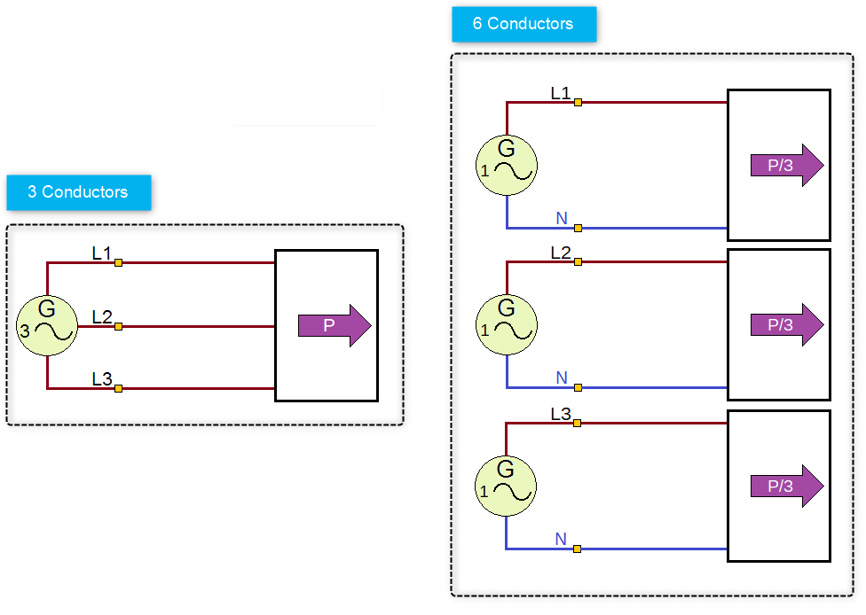
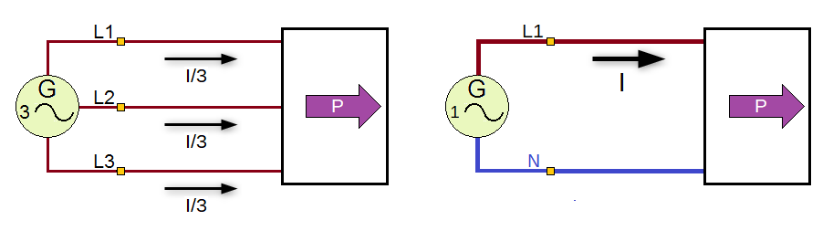
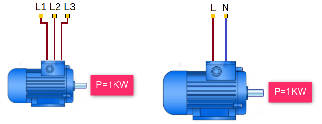

El sistema trifàsic presenta una sèrie d'avantatges, com són:
Estalvi de material conductor en el sistema de transport: per transmetre la mateixa quantitat d'energia a la mateixa tensió, una línia de transport trifàsica requereix menys material conductor que una línia de fase única. Tal com es pot veure en la imatge següent, un sistema trifàsic de potència P és equivalent a tres sistemes monofàsics de potència P/3. Per tant, el sistema trifàsic tan sols necessita 3 conductors, un per cada fase, per transportar la mateixa potència que el tres sistemes monofàsics (6 conductors).

Seccions del conductors més xicotetes: un sistema trifàsic que transporta una potència P, requereix conductors amb secció inferior als conductor d'un sistema monofàsic de la mateixa potència P. Tal com es pot veure en la imatge per cada fase circula la tercera part del corrent que circula pel sistema monofàsic.

Màquines elèctriques més xicotetes: per a una determinada potència, les dimensions de les màquines elèctriques trifàsiques són més xicotetes que les màquines elèctriques monofàsiques equivalents. Per tant, el cost global d'aquesta màquina elèctrica es redueix i a més, a causa de la reducció del pes, el transport i la instal·lació de la màquina és més sencilla. Com que aquestes màquines són més xicotetes, és més fàcil trobar instal·lacions on col·locar-les.

Inici Automàtic: el motor d'inducció trifàsic s'inicia automàticament, mentre que el motor d'inducció monofàsic necessita de mitjans auxiliars per poder arrancar. Per tant, el motor d'inducció monofàsic és més complex que un motor trifàsic equivalent, cosa que augmenta el cost d'aquest tipus de motor.
Rendiment: El motor trifàsic té un rendiment superior a un motor monofàsic de la mateixa potència.
Entrega Constant de Potència: Un sistema trifàsic entrega la potència de forma constant, mentre que un sistema monofàsic ho fa de forma polsant. Això fa que els motors trifàsics, a diferència dels monofàsics no tinguen problemes de vibracions.
Factor d'ondulació: el subministrament DC rectificat a partir de l'alimentació trifàsica té un factor d'ondulació del 4% mentre que el subministrament de DC rectificat a partir de l'alimentació monofàsica té un factor d'ondulació del 48'2%.
L'ondulació o arrissat, és el component de corrent altern que queda després de rectificar un senyal. Aquest factor se sol donar en % i dona una idea de la proporció d'arrissat respecte a la tensió contínua d'eixida.